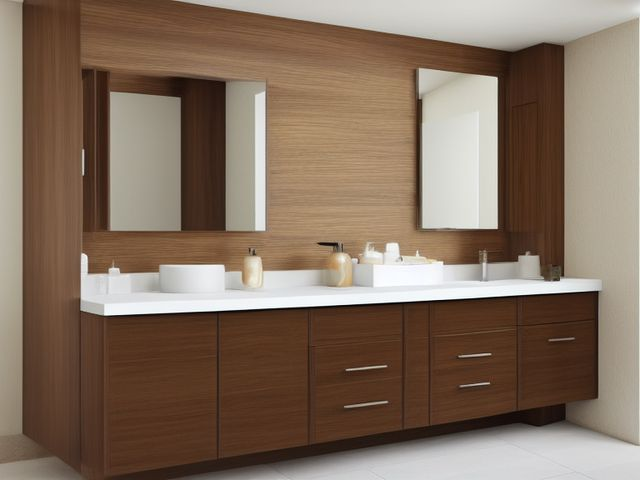

Primary Bathroom micro zone
The Vanity Counter
To hold the handful of things you touch every morning and every night, and nothing else.
One session: 30-45 min. most of it in Sort, deciding what has earned counter space

What done looks like
One tray you can lift with one hand, holding soap, the toothbrush holder, and no more than four daily products. Bare stone on both sides of the basin, a mirror with no splatter, and no cord crossing the sink.
Check these before you start
- Water and electricityA plugged-in heat tool sitting within cord reach of a full basin. Nothing stays plugged in while there is water standing in the bowl.
- Burn or fireA hot iron set down on a towel or a cosmetic bag to cool. Give it a metal or ceramic rest it always returns to, in the same spot every time.
- Fall, cut, or crushGlass bottles standing at the counter edge above a tile floor. Move glass to the back row against the mirror, or decant into something that does not shatter.
What to have on hand before you start
These are types of thing, not brands. If you already own something that does the job, that is the right one to use. Each says which pass needs it and what to watch out for.
- Bathroom grime and soap-film cleaner
Clean tubs, showers, sinks, and tile, in the Shine pass.
Never mix cleaners; verify stone compatibility. - Color-coded microfiber cloth set ×12
Wipe, dust, and dry surfaces, in the Shine pass.
Wash by use color; avoid fabric softener. - Neutral pH multi-surface cleaner
Routine cleaning of sealed surfaces, in the Shine and Sustain passes.
Verify surface compatibility; lock around children and pets. - Compact vacuum with attachments
Remove dust, crumbs, and debris, in the Shine pass.
Use appropriate attachment. - Keep, Relocate, Donate, Recycle, Trash container set ×5
Support rapid item routing during Sort, in the Sort pass.
Do not block exits. - Portable cleaning caddy
Transport and contain cleaning inputs, in the Straighten, Shine and Sustain passes.
Secure chemicals from children and pets. - Portable label maker
Create durable standardized labels, in the Standardize and Sustain passes.
Follow surface and adhesive guidance. - Removable write-on labels
Create temporary or adjustable visual controls, in the Standardize pass.
Test on delicate finishes.
Only if your vanity counter has one: 6 more
Not every vanity counter needs these. Each one is here because some do, and the reason is next to it.
- Two-Tier Slide-Out Organizer
Create accessible pull-out storage in cabinets, in the Straighten, Standardize and Sustain passes.
Do not overload; anchor wall-mounted or tall systems where required. - Medicine Bin Set
Group medicines by purpose and user, in the Straighten, Standardize and Sustain passes.
Do not overload; anchor wall-mounted or tall systems where required. - Lockable Medicine Box
Secure prescriptions or high-risk products, in the Straighten, Standardize and Sustain passes.
Do not overload; anchor wall-mounted or tall systems where required. - Drawer Divider Set
Create visible subcategories in shallow drawers, in the Straighten, Standardize and Sustain passes.
Do not overload; anchor wall-mounted or tall systems where required. - Towel Shelf Basket ×3
Contain towels and linen sets, in the Straighten, Standardize and Sustain passes.
Do not overload; anchor wall-mounted or tall systems where required. - Moisture Absorber or Humidity Monitor
Detect and reduce moisture risk in enclosed storage, in the Safety and Sustain passes.
Install and use according to product instructions.
The six passes, in order
Work them in this order. Sorting after you have arranged things means arranging things you were about to remove.
Sort
Decide what stays. Everything else leaves the zone now.
Pull everything off the counter onto a towel and put back only what your hands touched today and yesterday. The travel bottles, the sample sachets, and the hair tie graveyard go into a drawer or out of the room entirely.
Straighten
Give what stays a home, placed where the hand actually reaches.
Give the daily set one tray, on the side you reach with your dominant hand. The heat tool gets a heat-safe rest and its cord parks behind the basin rather than draped across it.
Shine
Clean it, and use the cleaning to inspect what you cannot see when it is full.
Wipe the tray, then the counter under it, then the base of the faucet where toothpaste dries into a crust. Finish with the mirror and the light switch plate, the thing in this room nobody ever wipes.
Surface by surface, all 7 of them, with what to use on each.
Safety
Make the zone safe for everybody who uses it, including the shortest person.
Water and a plugged-in dryer share one small surface in here. Keep the cord on the far side of the basin from the tap, and pull the plug at the wall the moment you set the tool down, not once your hair is finished.
Standardize
Write down the best way you know today, so it survives you forgetting.
Write the four-product limit on a strip of tape stuck under the tray, and tape a photo of the cleared counter inside the vanity door. A fifth bottle then has something to argue with before it lands.
Sustain
Attach the reset to something that already happens, so it keeps itself.
When you rinse your toothbrush at night, the tray goes back to match the photo before the light goes off. Same moment, every night.
The tool that lives out
The straightener or the dryer sits on the counter because the outlet is right there and you use it three or four times a week. That convenience is exactly what is costing you a clear counter, and it is the decision you keep stepping around. The rule that settles it: the counter holds only what you touch every single day. Three times a week is a drawer tool, so buy the heat-safe pouch, give it a drawer, and accept the few seconds it costs you. If the drawer genuinely will not reach from where you stand to dry your hair, the honest fix is a wall-mounted holder beside the mirror, not the counter.
Cleaning it properly, surface by surface
Work the whole station top to bottom: mirror and switch plate first, then the tray and its daily few, then the tap and the stone, so every drip lands on something you have not cleaned yet. The base of the faucet and the switch plate are the two spots nobody ever wipes.
Work down, not across. Whatever comes off a high surface lands on the one below it, so cleaning the floor first means cleaning it twice.
Carry these in with you. Bathroom grime and soap-film cleaner; Neutral pH multi-surface cleaner; Streak-free glass and mirror cleaner; Color-coded microfiber cloth set; Small detail brush set; Portable cleaning caddy.
- The mirror and the light fixture above it
Dry-dust the fixture and bulbs with the microfiber first so grime does not rain down later, then spray glass cleaner onto the cloth, not the mirror, and wipe the glass top to bottom in overlapping strokes. Buff dry with a second dry cloth so no film shows under the bulb light. - The light switch plate and the wall behind the tap
Mist a cloth with neutral pH cleaner and wipe the switch plate and its screw heads, where fingertips leave a grey bloom, keeping the cloth damp rather than wet so nothing runs into the switch. Wipe the backsplash wall down to the counter and give the caulk seam where wall meets stone a firm pass. - The tray and the daily items on it
Lift the whole tray off, wipe the counter under it, then wipe the tray itself and the base of the soap dish and toothbrush holder, where a soft pink film sets. Stand each item back only once it is dry. - The faucet, its base collar, and the handles
Work bathroom grime and soap-film cleaner into a detail brush and scrub the collar where the tap meets the stone, the crust of dried toothpaste, and the hard-water scale around the handles. Let it dwell a minute, then wipe and buff the metal dry so it does not spot. - The basin bowl, drain flange, and overflow hole
Wet the bowl, apply the soap-film cleaner, and work it around the flange and into the overflow slot with the detail brush. Rinse the whole bowl and wipe it dry so no ring is left to harden at the water line. - The stone counter on both sides of the basin
Clear the surface, then wipe the full run of stone with neutral pH cleaner, which will not etch the finish the way an acidic bathroom spray would. Follow the counter into the seam at the wall and out to the front edge, then dry it off rather than leaving it to air-dry into water marks. - The counter front lip and underside
Run a damp cloth along the front edge and the underside lip where hands grip, and down to the toe-kick and floor seam below, catching the hair and dust that gather where the vanity meets the floor.
Inspect as you clean. Cleaning is the only time you see the zone empty, so use it.
- A caulk line at the backsplash or around the basin going black or lifting away from the stone, which is water getting in behind.
- Dark spots creeping in from the edges of the mirror silvering, a sign moisture is sitting behind the glass.
- Water pooling or a chalky ring under the faucet base that keeps coming back, which points to a slow seep at the tap fitting.
- A hairline crack in the basin, or a switch plate that is cracked, warm to the touch, or loose on the wall.
- Rust freckling on the tap fixings, or a towel ring that has begun to wobble in its screws.
The standard that keeps it fixed
The counter carries one liftable tray and nothing beside it. Anything used less than daily lives behind a door.
Reset trigger. The nightly toothbrush rinse. The tray goes back to the photo before you leave the room.
The rest of the primary bathroom, in working order
Each of these is one session on its own. Finish this zone before you open the next.
- The Vanity Counter, you are here
- The Vanity Drawers
- The Under-Sink Cabinet
- The Medicine Cabinet
- The Shower or Tub
- The Toilet Area
- The Linen and Towel Storage
The Primary Bathroom in full, with what each of the 7 zones is for
Related reading
- What is 6S?
- This zone's safety pass, in full
- Is one spot in this zone always the one you skip?
- Why this zone gets messy again
- Decluttering vs. organizing
- Before you buy storage for this zone
- Still does not fit, even after the honest count?
- Does something in this zone actually get used somewhere else?
- Stuck on one item in this zone?
- Written the standard, but nobody else follows it?
- Does everyone in the house agree what "done" looks like here?
- Does more than one person use this zone?
- Found a duplicate of something in this zone?
- Why the standard above names one home per category
- Is the everyday item in this zone actually the easy one to reach?
- Not sure whether to keep something in this zone?
- Does this zone keep running out of something?
- Started this zone and stalled partway through?
- Have you stopped noticing the clutter in this zone?
When you want it off the screen
Carry The Vanity Counter into the room
The method above is complete and free. The Whole House Print Pack puts The Vanity Counter and the other 113 micro zones on 684 printable cards, so the steps you just read are not stuck behind a phone screen while your hands are full.
The Print Pack, 19 dollarsJust this zone, 4 dollarsOr draw a card free
The Vanity Counter on its own is 4 dollars for 6 cards. All 114 micro zones is 19 dollars for 684. The whole house is the better buy; the single zone is here so you can take only what you are working on.
If The Vanity Counter keeps fighting back, the real problem usually sits somewhere else in the room. A one hour virtual consult is 250 dollars: we find the function, the friction and the root cause together, and you keep a written standard for the space. See what a consult covers.